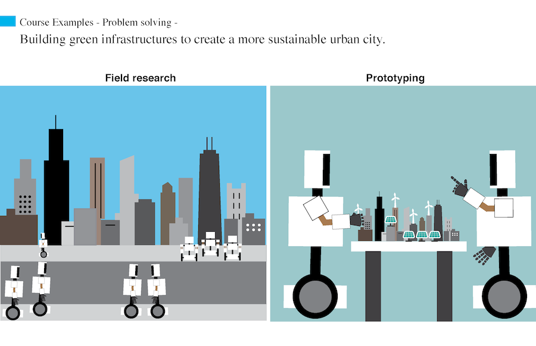
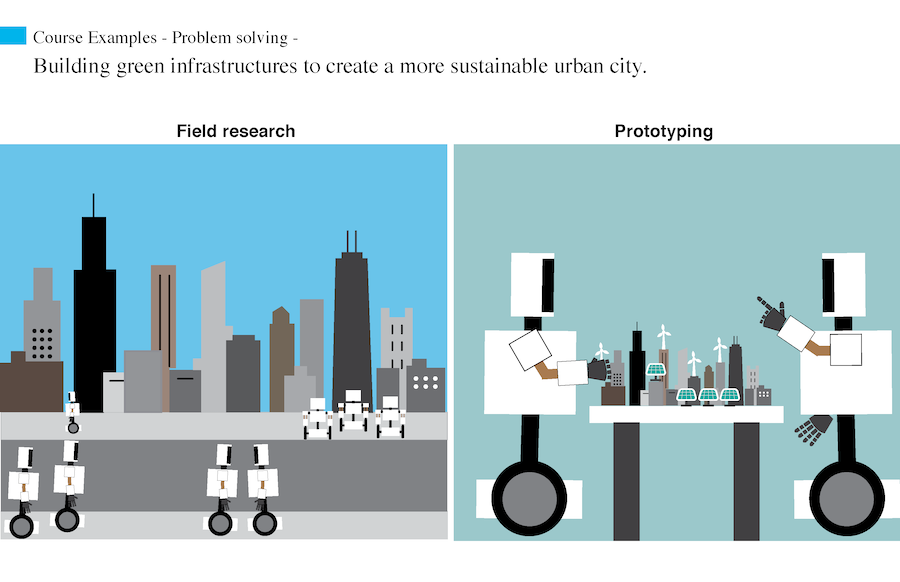

Overview
Teleducation is a concept that helps students solve physical constraints where they are dependent via telexistence technology. This is an individual project at ID that the students applied speculative design to design the future and created a prototype with digital technologies.
In the concept, students are able to use a remote robot to experience and learn in richer physical contexts and collaborate with other students who live in other environments, which is usually very hard for them because they are children.

 
